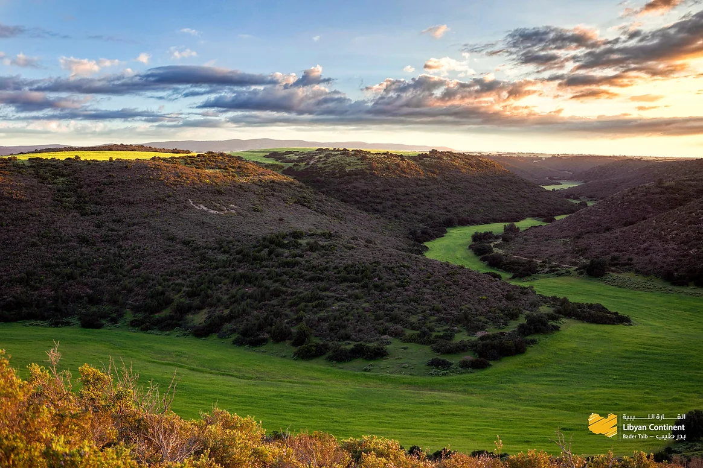
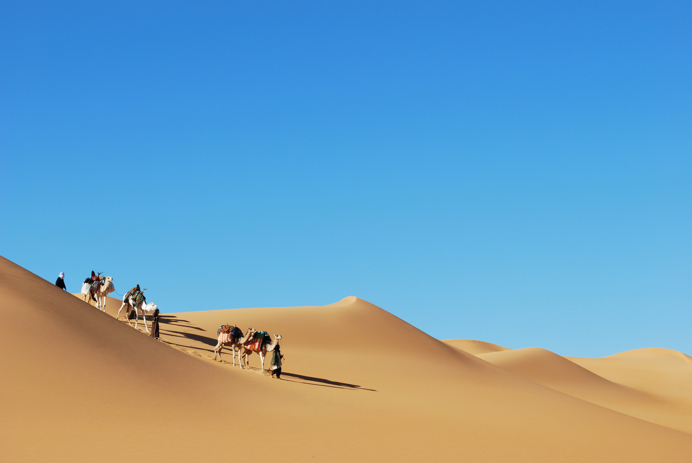

مدينة رئيسية
طرابلس
العاصمة وبوابة المتوسط، حيث المدينة القديمة والأسواق والذاكرة الحضرية الليبية.
استكشف أبرز الوجهات السياحية في ليبيا، من المدن التاريخية والمواقع الأثرية إلى الصحراء والواحات والساحل والبحيرات الطبيعية.
العاصمة وبوابة المتوسط، حيث المدينة القديمة والأسواق والذاكرة الحضرية الليبية.

بوابة الشرق الليبي ومركز حضري قريب من مسارات الجبل الأخضر.

مدينة نابضة قريبة من مسارات الساحل والصناعات التقليدية.

محطة انطلاق إلى فزان والواحات وتجارب الصحراء الكبرى.

مدينة شرقية مرتبطة بالطبيعة والمرتفعات والمواقع الكلاسيكية.

مدينة شرقية بين البحر والمرتفعات ومسارات الطبيعة.

مدينة رومانية متوسطية تعد من أبرز مواقع التراث العالمي في ليبيا.

مسرح أثري ومشهد متوسط على الساحل الغربي.
موقع كلاسيكي في الجبل الأخضر بين التاريخ والطبيعة.

مدينة الواحة وعمارة الصحراء البيضاء.

فن صخري وتكوينات طبيعية في قلب الصحراء الليبية.
مرتفعات وحرف وذاكرة جبلية قريبة من طرابلس.

عمارة جبلية ومسارات ثقافية في الغرب الليبي.

واحة تاريخية ومهرجانات وضيافة صحراوية.

بوابة جنوبية قريبة من أكاكوس ومسارات الصحراء.
مدن واحات ومسارات داخلية في قلب ليبيا.

واحة ذات حضور ثقافي ومهرجاني في الشرق الداخلي.

مياه وسط الرمال ومشهد طبيعي لا يشبه أي مسار آخر.

تكوين بركاني فريد في عمق الصحراء.

مرتفعات وغابات ووديان ومواقع أثرية شرقية.

قرى وحرف ومسارات جبلية غرب البلاد.
ساحل طويل ومشاهد بحرية متوسطية مفتوحة.